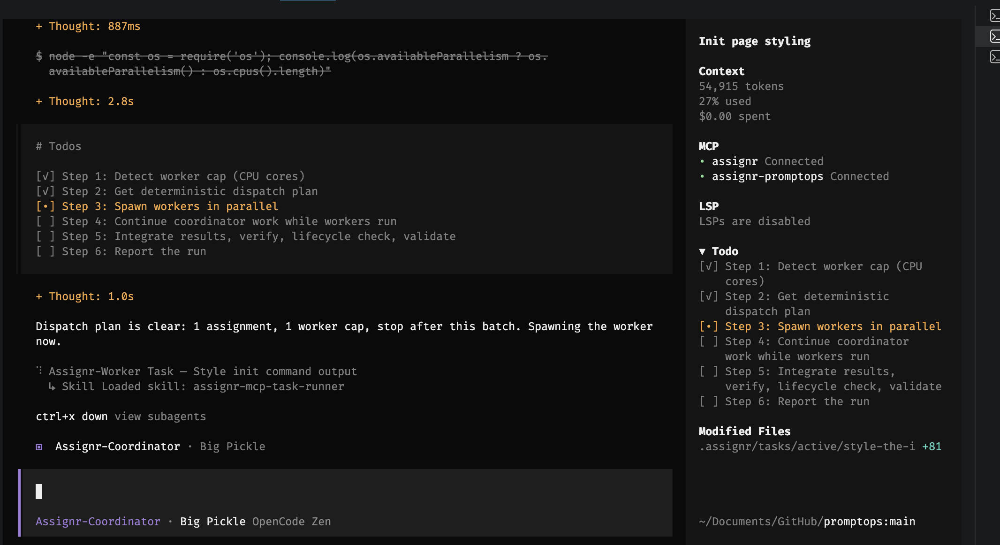
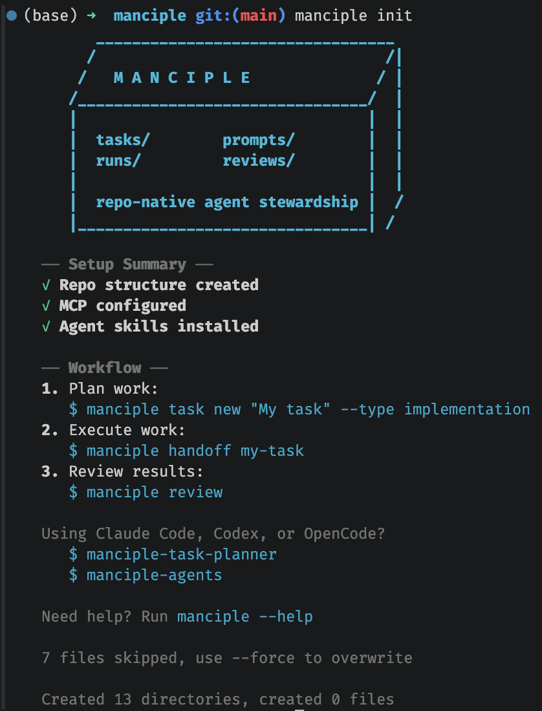

Write the task charter
Define the goal, scope, acceptance criteria, verification commands, and required outputs.
manciple.dev / command-line steward
A repo-native quest ledger for coding agents. Turn loose requests into scoped task charters with boundaries, verification commands, and review evidence.
npm install -g manciple

Core workflow
Manciple keeps the agent workflow in your repository as plain files. A task starts as a YAML contract, compiles into an agent-ready prompt, and ends with evidence a reviewer can check.
Define the goal, scope, acceptance criteria, verification commands, and required outputs.
Generate a bounded prompt for the coding agent already working in your repo.
Capture commands, changed files, risks, and results in a repo-local run log.
Move finished work to review with the original contract and receipts in one place.
Evidence and review
Manciple gives reviewers the original task, the worker's stated result, the files touched, commands run, residual risks, and lifecycle status. Review readiness checks catch missing evidence before a human spends attention on the diff.
manciple run-log build-login-page \
--result complete \
--agent Codex \
--model gpt-5-codex \
--command "pnpm test -- auth" \
--file "src/features/auth/LoginPage.tsx" \
--risks "No known risks."
MCP and agent integration
Manciple is the workflow layer, not a replacement runtime. The CLI creates repo-local task state and can install MCP configuration, Codex skills, Claude Code skills, and OpenCode agents so workers can load the same task contract through their native tools.
Installation
Install the CLI, initialize Manciple at a repository root, and compile the first handoff.
npm install -g manciple
manciple init
manciple new "Build login page"
Deeper docs